第１０８回全国高等学校野球選手権大会 ３回戦
英明 ０－４ 花巻東
惜しくも敗れる結果となりましたが、選手たちは、最後まで諦めることなく、精一杯戦い抜きました。
選手の皆さん、本当にお疲れさまでした。
そして、最後まで応援してくださった皆さま、ありがとうございました。
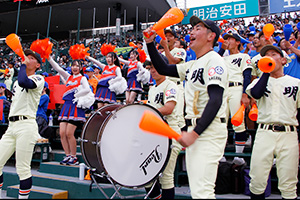
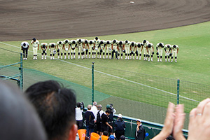
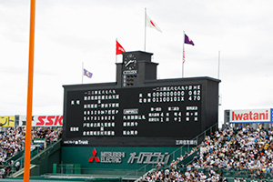
第１０８回全国高等学校野球選手権大会 ２回戦
英明 ６－１ 大分商業
熱戦の末、勝利を収めることができました。
最後まで粘り強く戦い抜いた選手の皆さん、本当にお疲れさまでした。
英明高校は、夏の甲子園大会初めての3回戦進出となります。
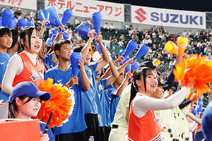
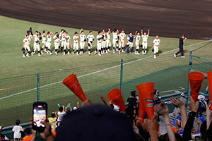
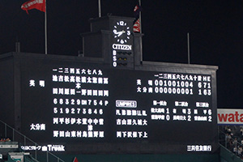
第１０８回全国高等学校野球選手権大会 １回戦
英明 ４－１ 関東第一
最後まで粘り強く戦い抜いて勝利をつかみました。熱い応援ありがとうございました。
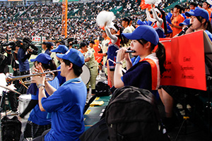
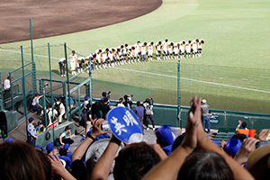
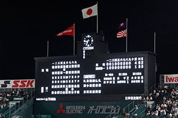
第１０８回全国高等学校野球選手権大会 壮行会
７月３０日（木）、第１０８回全国高等学校野球選手権大会に出場する野球部の壮行会を開催しました。
英明高校野球部は、2年ぶり5回目となる夏の甲子園出場を決めました。
壮行会では、生徒会副会長、西本校長、香川県高等学校野球連盟会長より温かい激励の言葉をいただき、野球部主将が甲子園に向けて力強く決意を述べました。
吹奏楽部・チアリーディング部による応援が行われ、応援生徒、保護者、教職員が一丸となって野球部へエールを送りました。
皆さまの温かいご声援をよろしくお願いいたします。
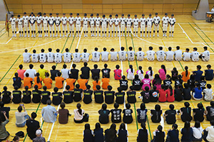
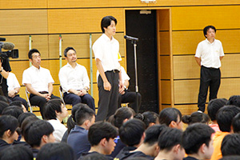
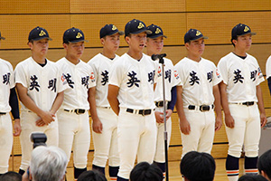
第１０８回全国高等学校野球選手権大会 大会日程
８月１６日（日）１３時００分〜 ３回戦（花巻東高等学校）
８月１３日（木）１８時００分〜 ２回戦（大分商業高等学校）
８月 ８日（土）１８時３０分〜 初戦（関東第一高等学校）
| ＜＜前のニュース | 次のニュース＞＞ |